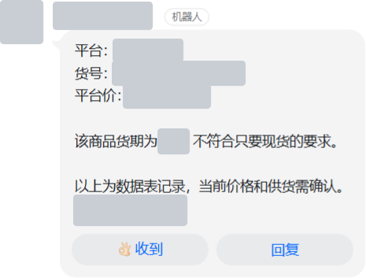
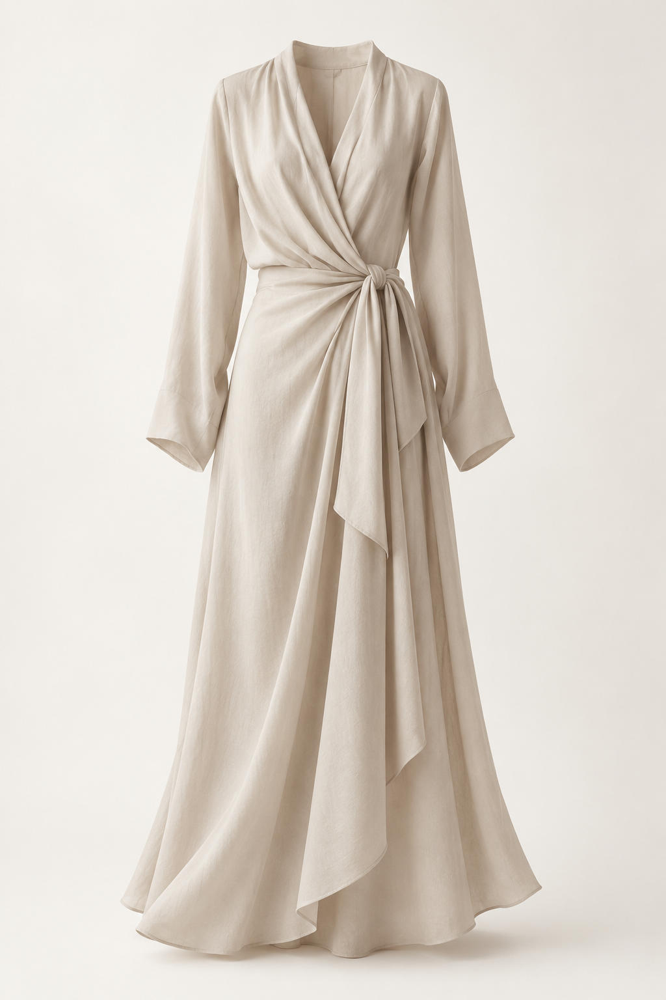

从业务问题出发，
把想法变成
可验证的产品。
有 B2B 电商运营经验，也有 AI 应用实践。
关注真实需求、清晰的规则和可验证的结果。
智能商品查询助手
让商品查询进入工作群，
让关键信息有据可查。
同事需要反复查找货号、价格、单位与交期。我把查询入口放到工作群，结合本地规则、AI 候选检索与来源核对，处理从提问到确认的过程。
钉钉 / 企业微信历史版本分别记录
2026 年 10 月 25 日
已组织整理与核验
如何工作
查询与答复流程示意- 01
在工作群里提问
同事输入完整货号，或用自然语言描述需要的商品。
- 02
找到对应商品
完整货号走本地查询；描述不全时，由 AI 查找候选。
- 03
核对来源与规则
核对商品记录中的价格、单位和交期，处理歧义与限制条件。
- 04
回复或进一步确认
按规则返回信息；不满足条件或有歧义时，先提示和确认。
一次真实的群内查询
已脱敏同事要求现货，助手先核对供货条件，再提示限制。

查看验证口径与当前状态
36/40 与 0.925 秒对应 10 月 25 日首次 40 题群测；首次未通过的 4 题修复后，于 10 月 26 日单独复测 4/4 通过，不合并为整体 100%。1,178 条指来源商品记录，不等同于去重 SKU 数。
项目完成钉钉内部试用与 V1 阶段验收。企业微信历史使用不并入钉钉 V1 验收。2026 年 10 月 27 日记录本机相关服务不可达，当前演示状态待确认。
当前阶段：已完成钉钉内部试用与 V1 阶段验收，当前在线演示状态待确认。
服装外贸 AI 图册
与询盘助手
把分散的图片和信息，
整理成便于检查与展示的销售素材。
面向外贸档口的手机展示场景，围绕图片比例、产品信息排版和多色展示，收敛首版范围并迭代细节。
2026 年 9 月 11 日记录
同时完成构建检查
从商品素材到展示内容
流程示意- 01
输入商品素材
商品图片、款式和颜色等基础信息。
- 02
整理展示内容
形成产品卡、多色展示和英文文案。
- 03
人工检查后使用
查看或下载图片，复制并核对文案。
产品卡
集中展示商品信息
多色展示
整理颜色与图片关系
英文文案
便于复制与人工核对

产品价值将图片、产品卡和文案组织为一套轻量流程，让销售素材更便于整理、检查和展示。
提出外贸场景、首版范围与移动端约束，针对排版、图片比例和颜色输入提出反馈，审阅方案并参与局部使用与复测。代码与技术验证借助 Codex 完成。
当前阶段：已有图册、产品卡和英文文案技术 MVP；真实客户与完整业务流程待验证。询盘解析为后续规划。
AI 简历助手 MVP
先找到真实匹配依据，
再决定怎样调整表达。
把真实简历和岗位描述放在一起对照，识别能支持要求的经历、仍待确认的信息，以及可调整的表达。
历史场景验收
同一份简历对照不同岗位，不等同于 5 位真实用户试用。从文本输入到本人修改
当前规则版流程示意- 01
粘贴文本
输入真实简历和目标岗位描述。
- 02
规则对照
校验输入，关联经历与岗位要求。
- 03
查看结构化结果
查看匹配依据、待确认项与建议。
- 04
本人核对与修改
复制结果，基于已有经历调整表达。
优势有原文依据
把可表达的优势关联到简历原文，便于本人核对。
改写基于已有经历
调整结构与表达，不把未做过的经历写入结果。
不确定项留待确认
由用户确认事实，再决定是否补充和使用。
确定自用场景、目标用户、首版流程和真实性要求，提供真实简历与岗位需求，参与使用反馈。产品文档由 AI 协助整理，页面、规则与技术验证借助 Codex 实现。
当前阶段：P0 已形成输入、校验、示例加载、六块结果与复制流程。未接大模型、文件上传或 OCR；暂无多人真实使用与采纳效果记录。
Dify 跨境客服
政策咨询工作流
不同市场，按对应政策分流；
需要判断的情况，交给人工。
围绕退货、退款与配送等咨询，设计市场和问题类型分流，明确政策冲突、未知市场和订单操作的人工接管边界。
YAML 解析 · 节点连线 · 分流路径
检查结构与路由，尚未完成模型问答和业务验收。政策问题如何分流
设计示意 · 非实际运行界面输入市场与问题
如退货、退款或配送咨询
按市场限定政策来源
设计为查找对应资料，有依据时引用答复。
资料冲突、未知市场、投诉或需要操作权限。
Chatflow YML、导入验收说明，以及结构和 10 组政策路由检查。
正式导入应用、调用模型完成问答，以及真实业务验收。
提出案例目标和工作流交付要求，提供脱敏业务背景。节点细化和技术校验由 AI 协助完成。
设计价值：减少跨市场政策混用，明确人工接管条件。流程不执行退款，也不编造实时订单与物流状态；实际问答效果仍待验证。
商品图片批处理
自动化工作流
把复制、命名和分包的重复操作，
整理成可重复执行的流程。
围绕大量货号对应模板图片的工作，把程序处理与人工审核分开安排，处理后再检查并上传。
按货号复制同一张模板图
本人确认的工作经验，不是 5 万张不同的商品画面。从货号清单到分批上传
流程示意- 01
整理 Excel 货号
读取非空货号，按原顺序去重。
- 02
复制模板并命名
按货号复制同一张图片，处理重名。
- 03
生成 ZIP 分包
按包大小组织文件，便于后续上传。
- 04
人工审核与上传
本人检查结果，再分批上传平台。
同一处理阶段的耗时对比
仅比较上传前的复制、命名与打包。
程序处理后，仍由本人审核并上传。
耗时为本人确认的工作经验，暂无独立计时日志。约 5 分钟不含人工审核和分批上传。
描述真实重复步骤，让 Claude 协助整理流程文档，再由 CodeBuddy 执行，最后由我审核并分批上传。
流程价值：将重复文件操作交给程序处理，把人工精力留给检查与上传。当前记录来自实际工作经验，暂无完整运行脚本与独立计时日志。